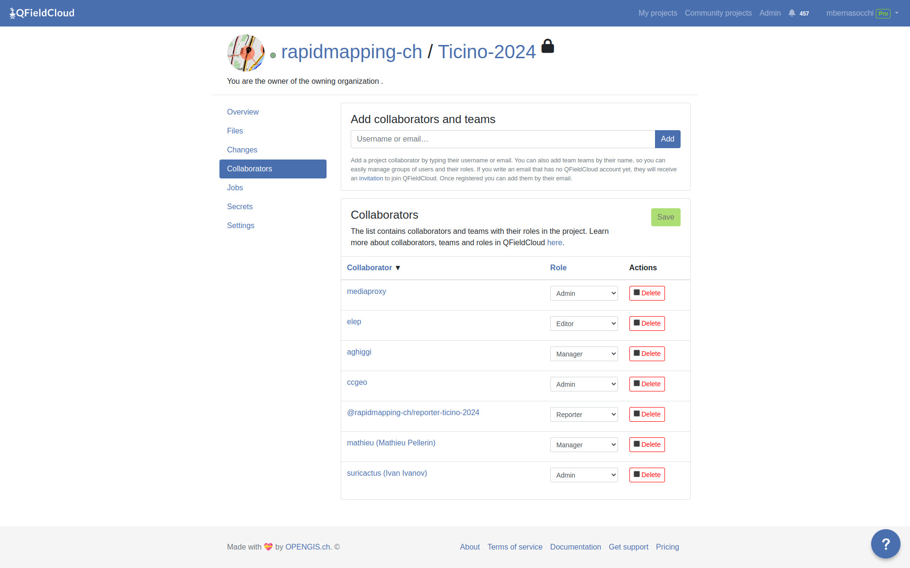
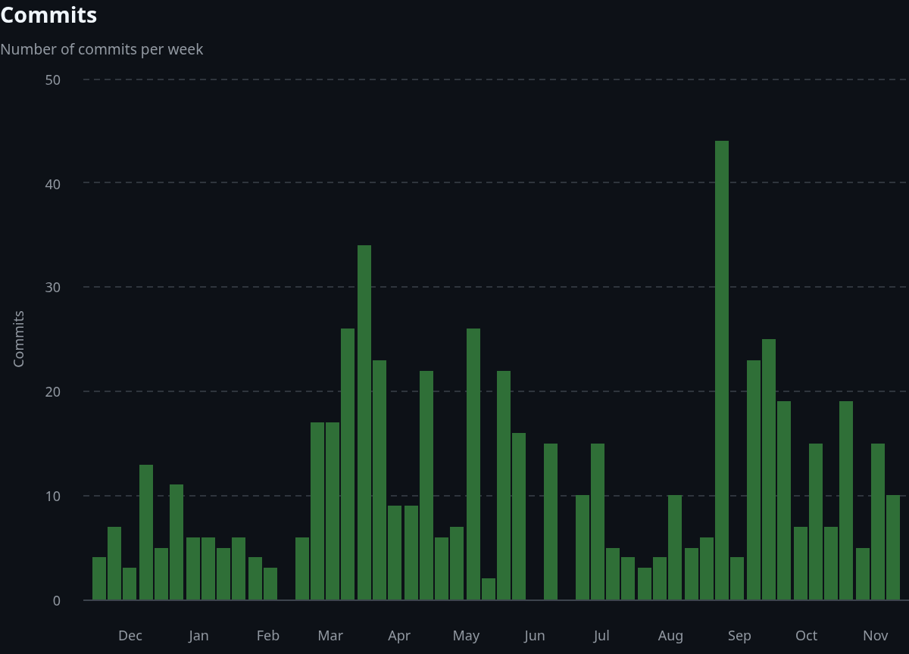
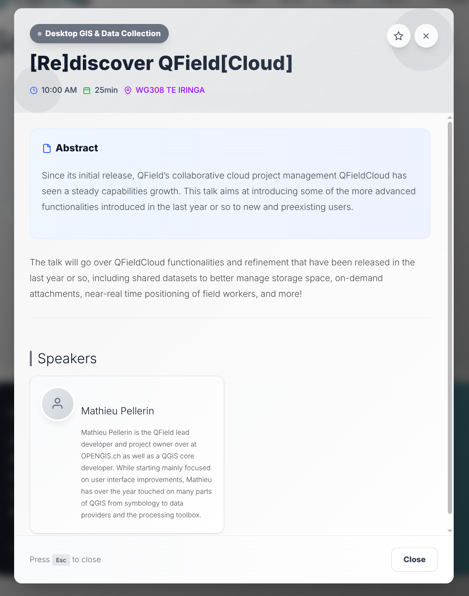

## Manage your fieldwork directly from your app with QFieldCloud API integration  ### Ivan Ivanov, OPENGIS.ch --- <!-- .slide: class="stack" --> # OPEN SOURCE<br><span class="green">GEONINJAS</span><br>MADE IN<br>SWITZERLAND ### we l[i|o]ve open source. --- ## What is QFieldCloud? ## Your tool for seamless fieldwork! ☁️ Centralized project, data and settings management for QGIS/QField projects. <br> 🤝 Collaboration - users, organizations, teams. <br> ✏️ Data versioning. <br> 🧑💻 API integrations. <br> <p></p> --- ## Use [app.qfield.cloud](https://app.qfield.cloud) ## the OPENGIS.ch hosted solution QFieldCloud is hosted **in Switzerland**! --- ## Use dedicated/on-premises QFieldCloud ## your own QFieldCloud QFieldCloud is hosted **in your organization**! <div style="text-align: center; font-size: 5rem; margin-top: 5rem;"> 🌎🌍🌏 </div> --- ## Use QFieldCloud ## hosted by yourself ``` $ git clone git@github.com:opengisch/QFieldCloud.git ``` --- ## 2025 ## in review  --- ## 800 code changes ## 35 released versions <p></p> --- ## 9000 ## unique active monthly users ## on app.qfield.cloud <div style="font-size: 2rem"> 👩🏽💻👨🏿🔬👩🏼🏫🧑🏾🚀👨🏻💻👩🏿🚒🧑🏽🎨👨🏼⚖️👩🏾⚕️🧑🏻🎤👨🏿🍳👩🏽🔧🧑🏼🎓👨🏾✈️👩🏻🌾🧑🏿🏭👨🏽💼👩🏼🔬🧑🏾💻👨🏻🏫👩🏿🚀🧑🏽💻👨🏼🚒👩🏾🎨🧑🏻⚖️👨🏿⚕️👩🏽🎤🧑🏼🍳👨🏾🔧👩🏻🎓🧑🏿✈️👨🏽🌾👩🏼🏭🧑🏾💼👨🏻🔬👩🏿💻🧑🏽🏫👨🏼🚀👩🏾💻🧑🏻🚒👨🏿🎨👩🏽⚖️🧑🏼⚕️👨🏾🎤👩🏻🍳🧑🏿🔧👨🏽🎓👩🏼✈️🧑🏾🌾👨🏻🏭👩🏿💼🧑🏽🔬👨🏼💻👩🏾🏫🧑🏻🚀👨🏿💻👩🏽🚒🧑🏼🎨👨🏾⚖️👩🏻⚕️🧑🏿🎤👨🏽🍳👩🏼🔧🧑🏾🎓👨🏻✈️👩🏿🌾🧑🏽🏭👨🏼💼👩🏾🔬🧑🏻💻👨🏿🏫👩🏽🚀🧑🏼💻👨🏾🚒👩🏻🎨🧑🏿⚖️👨🏽⚕️👩🏼🎤🧑🏾🍳👨🏻🔧👩🏿🎓🧑🏽✈️👨🏼🌾👩🏾🏭🧑🏻💼👨🏿🔬👩🏽💻🧑🏼🏫👨🏾🚀👩🏻💻🧑🏿🚒👨🏽🎨👩🏼⚖️🧑🏾⚕️👨🏻🎤👩🏿🍳🧑🏽🔧👨🏼🎓👩🏾✈️🧑🏻🌾👨🏿🏭👩🏽💼🧑🏼🔬👨🏾💻👩🏻🏫🧑🏿🚀👨🏽💻👩🏼🚒🧑🏾🎨👨🏻⚖️👩🏿⚕️🧑🏽🎤👨🏼🍳👩🏾🔧🧑🏻🎓👨🏿✈️👩🏽🌾🧑🏼🏭👨🏾💼👩🏻🔬🧑🏿💻👩🏽🏫👨🏼🚀👩🏾💻🧑🏻🚒👨🏿🎨👩🏽⚖️🧑🏼⚕️👨🏾🎤👩🏻🍳🧑🏿🔧👨🏽🎓👩🏼✈️🧑🏾🌾👨🏻🏭👩🏿💼🧑🏽🔬👨🏼💻👩🏾🏫🧑🏻🚀👨🏿💻👩🏽🚒🧑🏼🎨👨🏾⚖️👩🏻⚕️🧑🏿🎤👨🏽🍳👩🏼🔧🧑🏾🎓👨🏻✈️👩🏿🌾🧑🏽🏭👨🏼💼👩🏾🔬🧑🏻💻👨🏿🏫👩🏽🚀🧑🏼💻👨🏾🚒👩🏻🎨🧑🏿⚖️👨🏽⚕️👩🏼🎤🧑🏾🍳👨🏻🔧👩🏿🎓🧑🏽✈️👨🏼🌾👩🏾🏭🧑🏻💼👨🏿🔬👩🏽💻🧑🏼🏫👨🏾🚀👩🏻💻🧑🏿🚒👨🏽🎨👩🏼⚖️🧑🏾⚕️👨🏻🎤👩🏿🍳🧑🏽🔧👨🏼🎓👩🏾✈️🧑🏻🌾👨🏿🏭👩🏽💼🧑🏼🔬👨🏾💻👩🏻🏫🧑🏿🚀👨🏽💻👩🏼🚒🧑🏾🎨👨🏻⚖️👩🏿⚕️🧑🏽🎤👨🏼🍳👩🏾🔧🧑🏻🎓👨🏿✈️👩🏽🌾🧑🏼🏭👨🏾💼👩🏻🔬🧑🏿💻👩🏽🏫👨🏼🚀👩🏾💻🧑🏻🚒👨🏿🎨👩🏽⚖️🧑🏼⚕️👨🏾🎤👩🏻🍳🧑🏿🔧👨🏽🎓👩🏼✈️🧑🏾🌾👨🏻🏭👩🏿💼🧑🏽🔬👨🏼💻👩🏾🏫🧑🏻🚀👨🏿💻👩🏽🚒🧑🏼🎨👨🏾⚖️👩🏻⚕️🧑🏿🎤👨🏽🍳👩🏼🔧🧑🏾🎓👨🏻✈️👩🏿🌾🧑🏽🏭👨🏼💼👩🏾🔬🧑🏻💻👨🏿🏫👩🏽🚀🧑🏼💻👨🏾🚒👩🏻🎨🧑🏿⚖️👨🏽⚕️👩🏼🎤🧑🏾🍳👨🏻🔧👩🏿🎓🧑🏽✈️👨🏼🌾👩🏾🏭🧑🏻💼👨🏿🔬👩🏽💻🧑🏼🏫👨🏾🚀👩🏻💻🧑🏿🚒👨🏽🎨👩🏼⚖️🧑🏾⚕️👨🏻🎤👩🏿🍳🧑🏽🔧👨🏼🎓👩🏾✈️🧑🏻🌾👨🏿🏭👩🏽💼🧑🏼🔬👨🏾💻👩🏻🏫🧑🏿🚀👨🏽💻👩🏼🚒🧑🏾🎨👨🏻⚖️👩🏿⚕️🧑🏽🎤👨🏼🍳👩🏾🔧🧑🏻🎓👨🏿✈️👩🏽🌾🧑🏼🏭👨🏾💼👩🏻🔬🧑🏿💻👩🏽🏫👨🏼🚀👩🏾💻🧑🏻🚒👨🏿🎨👩🏽⚖️🧑🏼⚕️👨🏾🎤👩🏻🍳🧑🏿🔧👨🏽🎓👩🏼✈️🧑🏾🌾👨🏻🏭👩🏿💼🧑🏽🔬👨🏼💻👩🏾🏫🧑🏻🚀👨🏿💻👩🏽🚒🧑🏼🎨👨🏾⚖️👩🏻⚕️🧑🏿🎤👨🏽🍳👩🏼🔧🧑🏾🎓👨🏻✈️👩🏿🌾🧑🏽🏭👨🏼💼👩🏾🔬🧑🏻💻👨🏿🏫👩🏽🚀🧑🏼💻👨🏾🚒👩🏻🎨🧑🏿⚖️👨🏽⚕️👩🏼🎤🧑🏾🍳👨🏻🔧👩🏿🎓🧑🏽✈️👨🏼🌾👩🏾🏭🧑🏻💼👨🏿🔬👩🏽💻🧑🏼🏫👨🏾🚀👩🏻💻🧑🏿🚒👨🏽🎨👩🏼⚖️🧑🏾⚕️👨🏻🎤👩🏿🍳🧑🏽🔧 🧑🏼🎨👨🏾⚖️👩🏻⚕️🧑🏿🎤👨🏽🍳👩🏼🔧🧑🏾🎓 </div> --- ## Notable 2025 features - **Speed** - make file handling equally fast for both small and large projects. - **Shared datasets** - upload your basemaps once, use it within all projects in your organization. - **Organization and user level secrets** - having to declare the same secrets for each individual project was tiring. - **Single sign-on (SSO) support** - sign in via Google OIDC. --- ## And more, thanks to you, ## our users and supporters! <div style="text-align: center; font-size: 15rem; margin-top: 5rem;">🫶</div> --- ## Integrate QFieldCloud in your workflow 😎 **Stable APIs** - integrate with QFieldCloud using the RESTful API documented with OpenAPI/Swagger. <br> 💻 **Use the CLI** - `pip install qfieldlcoud-sdk` and use `qfieldcloud-cli` in your shell. <br> 🐍 **Use the SDK** - `pip install qfieldcloud-sdk` and `import qfieldcloud_sdk` in Python. <br> ☁️ **Extend QFieldCloud** - build an app on top of QFieldCloud. --- ## QFieldCloud API ## [app.qfield.cloud/swagger](https://app.qfield.cloud/swagger)  --- ## Example with our beloved `curl` IN: ``` curl -X 'POST' \ 'https://app.qfield.cloud/api/v1/auth/login/' \ -H 'accept: application/json' \ -H 'Content-Type: application/x-www-form-urlencoded' \ -d 'username=foss4g2025&email=&password=kiaorakoprivshtitsa' ``` OUT: ```json { "token": "o4OahKpKw7N16BTdD8uqsNxHbNHuYIFeCxVGPIei2KQaRPue8wOaDU7B4ZnanDwPIQFG3ZAoDZy3odkQJSBK8jV8p0GKMfNAjaFN", "expires_at": "2025-12-19T00:14:10.956438+01:00", "username": "foss4g2025", "type": "1", "email": "ivan+foss4g2025@opengis.ch", "avatar_url": "https://app.qfield.cloud/api/v1/files/avatars/foss4g2025/avatar..png", "first_name": "Kia", "last_name": "Ora", "full_name": "Kia Ora" } ``` --- ## Use `qfieldcloud-sdk-python` <br> <br> <br> ### Check repo ### [github.com/opengisch/qfieldcloud-sdk-python](https://github.com/opengisch/qfieldcloud-sdk-python) <br> <br> ### Install ``` $ pip install qfieldcloud-sdk ``` ### Usage ``` $ qfieldcloud-cli --help ``` --- ## Login IN: ```shell $ qfieldcloud-cli login foss4g2025 kiaorakoprivshtitsa ``` OUT: ```shell Log in foss4g2025… Welcome to QFieldCloud, foss4g2025. QFieldCloud has generated a secret token to identify you. Put the token in your in the environment using the following code, so you do not need to write your username and password again: export QFIELDCLOUD_TOKEN="LnNOo4vRtXCb3RBi9mRhi4yl8x3VeLD75ofWTzWrcGAUll8TS0JP0Ko0tNAv7PFZ6nQDtodM2gpzI2M7NXBIBcp6Li44ldWoYnwd" ``` Alternatively, you can: ```shell $ qfieldcloud-cli --username foss4g2025 --password kiaorakoprivshtitsa list-projects ``` --- ## List projects IN: ```shell $ qfieldcloud-cli list-projects ``` OUT: ```shell Listing projects… User does not have any projects yet. ``` --- ## Create project IN: ```shell qfieldcloud-cli create-project --description 'Daily work project' --is-private 'Tree_Survey' ``` OUT: ```shell $ qfieldcloud-cli create-project --description 'Daily work project' --is-private 'Tree_Survey' Creating project Tree_Survey… Created project: | ID | OWNER/NAME | IS PUBLIC | DESCRIPTION | -------------------------------------------------------------------------------------------------- | e22f9c7f-5ee3-4950-8f6d-b39d493fd536 | foss4g2025/Tree_Survey | 0 | Daily work project | ``` --- ## List projects (as JSON) IN: ```shell $ qfieldcloud-cli --json list-projects ``` OUT: ```json [ { "can_repackage": true, "created_at": "2025-11-19T00:49:14.928258+01:00", "data_last_packaged_at": null, "data_last_updated_at": null, "description": "Daily work project", "id": "e22f9c7f-5ee3-4950-8f6d-b39d493fd536", "is_attachment_download_on_demand": false, "is_featured": false, "is_public": false, "is_shared_datasets_project": false, "name": "Tree_Survey", "needs_repackaging": true, "owner": "foss4g2025", "private": true, "shared_datasets_project_id": null, "status": "failed", "updated_at": "2025-11-19T00:49:14.928281+01:00", "user_role": "admin", "user_role_origin": "project_owner" } ] ``` --- ## Upload files to a project IN: ```shell $ qfieldcloud-cli upload-files e22f9c7f-5ee3-4950-8f6d-b39d493fd536 . ``` OUT: ```json Uploading "datasets/bees.gpkg"...: 164kB [00:01, 107kB/s] Uploading "DCIM/lavender.jpg"...: 72.7kB [00:00, 118kB/s] Uploading "DCIM/grass.jpg"...: 75.8kB [00:00, 82.4kB/s] Uploading "DCIM/1.jpg"...: 162kB [00:01, 158kB/s] Uploading "DCIM/weed.jpg"...: 127kB [00:00, 137kB/s] Uploading "DCIM/colza.jpg"...: 113kB [00:00, 123kB/s] Uploading "DCIM/LICENSE"...: 836B [00:00, 1.37kB/s] Uploading "DCIM/4.jpg"...: 146kB [00:01, 118kB/s] Uploading "DCIM/2.jpg"...: 78.6kB [00:00, 85.4kB/s] Uploading "DCIM/taraxacum.jpg"...: 79.8kB [00:00, 86.6kB/s] Uploading "DCIM/3.jpg"...: 75.0kB [00:00, 81.5kB/s] Uploading "basemaps/laax.gpkg"...: 1.93MB [00:03, 496kB/s] Uploading "bees.qgz"...: 122kB [00:00, 199kB/s] Uploading files "e22f9c7f-5ee3-4950-8f6d-b39d493fd536" from .… Upload finished after uploading 13. ``` --- ## Python SDK you said too! ```python from qfieldcloud_sdk import sdk client = sdk.Client() resp = client.login("foss4g2025", "kiaorakoprivshtitsa") resp["token"] ``` OUT: ```shell 'gNCU0LvKR4NiEUwhk5ytx7D2kTBWcGpU03yJH9WxElQJyNC9rzbmeMoTbgZCI15PqorbiJt3yVvDggDzdqwGZxFBCKgz1aU69LaJ' ``` --- ## List projects files IN: ```python client.list_remote_files("e22f9c7f-5ee3-4950-8f6d-b39d493fd536") ``` OUT: ```json [ { "etag": "4ab247c77cc1d17307dfb772954b7eab", "is_attachment": false, "last_modified": "18.11.2025 23:57:06 UTC", "md5sum": "4ab247c77cc1d17307dfb772954b7eab", "name": "basemaps/laax.gpkg", "sha256": "4601ba41fe33143e5f9957faa5c55ea066f8e5c668e3c0c173400992c039c117", "size": 1929216, "uploaded_at": "2025-11-19T00:57:06.392814+01:00", "versions": [ { "display": "v20251118235706", "is_latest": true, "last_modified": "18.11.2025 23:57:06 UTC", "md5sum": "4ab247c77cc1d17307dfb772954b7eab", "sha256": "4601ba41fe33143e5f9957faa5c55ea066f8e5c668e3c0c173400992c039c117", "size": 1929216, "uploaded_at": "2025-11-19T00:57:06.392814+01:00", "version_id": "88916c41-d492-4f56-b63e-7f55f73a89f7" } ] }, // ... ] ``` --- ## Useful tricks Make backup of all images at 08:47: ```shell 47 8 * * * mkdir -p /tmp/foss4g2025 && qfieldcloud-cli download-files --filter '**/*.jpg' e22f9c7f-5ee3-4950-8f6d-b39d493fd536 /tmp/foss4g2025 ``` --- ## Check docs ## [opengisch.github.io/qfieldcloud-sdk-python](https://opengisch.github.io/qfieldcloud-sdk-python)  --- # Success stories --- ### TONGA ### MAFF - Photo capture as <span style="font-weight: bolder;">attachments</span> to referenced geometries. - QFC API / SDK allowed for custom application integration. - QFC API documentation allowed for easy writing of a R module to <span style="font-weight: bolder;">communicate with QFC server/project data</span> <br> <br>  --- ### FUTURA SISTEMI ### City trees management - Integration with 3rd party WebGIS management system through QFC API. - Leveraging QField/QFC offline work capability. --- ## Yeah, I am almost convinced, but... - I have no idea if QFieldCloud is going to work for us... - I am almost convinced, but I need a clarification about... - I am fully convinced QFieldCloud is great, but we will need some training... - Where do we even get started with all these features... - If only it were possible to customize this for us by adding... - It looks nice, but I'm missing the one feature that is preventing us from using it... - We have a much more complex system, and we need more information on how to integrate it... ## **Drop us an email at [sales@qfield.cloud](sales@qfield.cloud)** ## **or ask the community at [community.qfield.org](https://community.qfield.org/)** ## **or find us around during the event.** --- # Friday, 10:00 AM <p></p> --- ## Thank you! @suricactus --- https://basemaps.linz.govt.nz/v1/tiles/topo-raster-gridded/WebMercatorQuad/%7Bz%7D/%7Bx%7D/%7By%7D.webp?api=d01egend5fa9ztrj72ffh6a7gx3